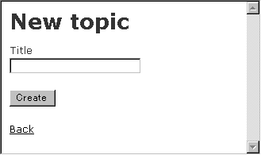
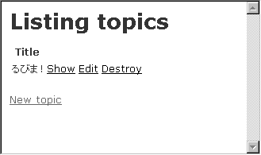
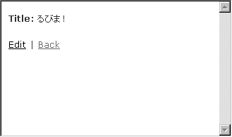
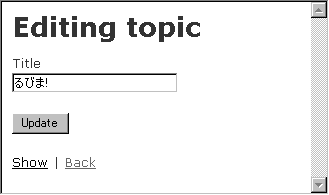
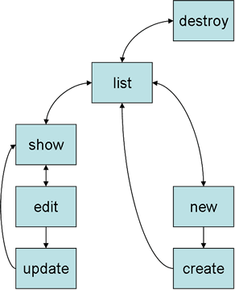
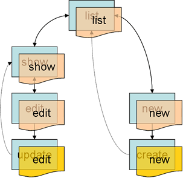
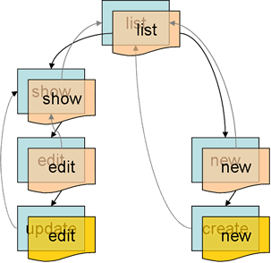

RubyOnRails を使ってみる 【第 2 回】 (続・RubyOnRails を使ってみる)
はじめに
もりきゅうです。先号に引き続き、Ruby on Rails (以下 Rails) に関する記事をお届けします。
さて、前回のまとめには「次回は私が作った買い物かごを紹介しつつ」と書いてあります。 今号は執筆当初 (といっても締め切りはすでに過ぎていました。ごめんなさい) 製作過程から始めるつもりでした。しかし、 Rails の開発が進んだこともあり、先号の内容からではいきなりすぎる感が否めません。 というわけで、インストールが終わった時点からもう一度、お話を始めたいと思います。
また、今回は特に Windows XP 環境での作業を元にして記事を書いています。 これは単に私の都合なわけですが、UNIX 環境で同様に試して問題になるようなことは特にないので、cmd.exe のプロンプトを気にせずにお読みください。
Rails の使い方
準備
本稿では Windows XP 環境を例にして説明します。
RDBMS として MySQL を使います。
- mysql-essential-4.1.9-win32.msi
- Windows 版 MySQL-4.1 のインストーラです。このインストーラは root パスワードやパラメータの設定も行うことができます。
RubyGems での Rails のバージョンは以下の通り。
- actionmailer 0.6.1
- actionpack 1.4.0
- activerecord 1.6.0
- rails 0.9.5
- rake 0.4.15
test/unit, rake にパッチをあてる
今回用いるバージョンの test/unit, rake には不具合が見つかっています。以下のパッチをあてておきます。
- dir.rb.cleanup.patch
- テストが途中で止まってしまう現象に対するパッチ Having problems running tests under 1.8.2?
- rake-0.4.15-testtask.patch
- win32 における testrb の呼び出しに対するパッチ ((う)さんに感謝)
Model を作る
Windows XP の cmd.exe での作業を例にして説明します。
C:\var\www>rails rubimaRails プロジェクト rubima が作られます。
C:\var\www>cd rubima
C:\var\www\rubima>ruby script\generategenerate の説明が表示されます。
Model として Topic クラスを作りましょう。
C:\var\www\rubima>ruby script\generate model Topicすると、次に挙げるファイルが作られます。
- app/models/topic.rb
- test/fixtures/topics.yml
-
test/unit/topic_test.rb
- app/models/topic.rb
class Topic < ActiveRecord::Base
endapp/models/ に作られたファイル topic.rb には ActiveRecord::Base から継承したクラス Topic の定義が書かれています。
- test/fixtures/topics.yml
# Read about fixtures at http://ar.rubyonrails.org/classes/Fixtures.htmltest/fixtures/ に作られたファイル topics.yml はテストに使うデータ (これを fixtures といいます) を書くためのファイルです。
fixtures にはいくつかの書き方がありますが、本稿では YAML での書き方を見ていきます。 YAML 形式のファイル拡張子は .yml または .yaml とします。
YAML については YAML を Ruby で使う などを参照してください。
- test/unit/topic_test.rb
require File.dirname(__FILE__) + '/../test_helper'
class TopicTest < Test::Unit::TestCase
fixtures :topics
# Replace this with your real tests.
def test_truth
assert true
end
endtest/unit/ に作られたファイル topic_test.rb には Test::Unit::TestCase から継承したテストケースクラス TopicTest の定義が書かれています。
fixtures をテストに用いるには、すでに topic_test.rb に書かれているように、テストケースクラスの中で
fixtures :topicsと指定します (ここでは topics table を指定しています。単数形のクラス名と複数形のテーブル名の対応に注意してください)。 これにより、app/models/topic.rb が require され、test/fixtures/topics.yml が読み込まれます。読み込まれたデータは Topic のインスタンスとして保持されます。
テストの実行
では、テストを実行してみましょう。
まず、Rails が用意している Rakefile の task を確認しておきます。
C:\var\www\rubima>rake -T
(in C:/var/www/rubima)
rake apidoc # Build the apidoc HTML Files
rake appdoc # Build the appdoc HTML Files
rake clobber_apidoc # Remove rdoc products
rake clobber_appdoc # Remove rdoc products
rake clone_structure_to_test # Recreate the test databases from the development structure
rake db_structure_dump # Dump the database structure to a SQL file
rake default # Run all the tests on a fresh test database
rake doc # Generate API documentatio, show coding stats
rake purge_test_database # Empty the test database
rake reapidoc # Force a rebuild of the RDOC files
rake reappdoc # Force a rebuild of the RDOC files
rake stats # Report code statistics (KLOCs, etc) from the application
rake test_functional # Run tests for test_functional
rake test_units # Run tests for test_unitsふむ。test/unit/ に置かれているテストの実行は test_units ですね。
C:\var\www\rubima>rake test_units
(in C:/var/www/rubima)
ruby -Ilib;test -Sx testrb.bat test/unit/topic_test.rb
Loaded suite topic_test.rb
Started
E
Finished in 1.051 seconds.
1) Error:
test_truth(TopicTest):
Mysql::Error: #28000Access denied for user 'root'@'localhost' (using password: NO)
...
1 tests, 0 assertions, 0 failures, 1 errors
rake aborted!
Command failed with status (1): [ruby -Ilib;test -Sx testrb.bat test/unit/topic_test.rb ]テストの結果、エラーになりました。問題を検知しているので、これは正しい動作です。 次に、このエラーを解決するための作業を行います。
データベースの設定
上のテストのエラーは MySQL のアクセス権が正しく設定されていないために起きています。 データベースの設定は config/database.yml で行います。このファイルは YAML 形式で書かれています。
config/database.yml の初期状態は以下の通り。
- config/database.yml
development:
adapter: mysql
database: rails_development
host: localhost
username: root
password:
test:
adapter: mysql
database: rails_test
host: localhost
username: root
password:
production:
adapter: mysql
database: rails_production
host: localhost
username: root
password:今回重要なのは development と test の設定です。 まず、開発用 (development) の database 名を決めます。ここでは rubima とします。 テスト用 (test) の database 名は、とりあえず rails_test のままにしておきます。
ユーザ名とパスワードに関しては、開発用のユーザを作っておきましょう。
C:\var\www\rubima>mysql -u root -p
Welcome to the MySQL monitor. Commands end with ; or \g.
Your MySQL connection id is 1825 to server version: 4.1.9-nt
Type 'help;' or '\h' for help. Type '\c' to clear the buffer.rails@localhost が rubima と rails_test table を扱えるようにします。
mysql> grant all on rubima.* to rails@localhost;
Query OK, 0 rows affected (0.01 sec)
mysql> grant all on rails_test.* to rails@localhost;
Query OK, 0 rows affected (0.00 sec)
mysql> \q
ByeMySQL の GRANT 構文については MySQL リファレンスマニュアル を参照してください。
今回はパスワードを指定しませんでした。
- config/database.yml
development:
adapter: mysql
database: rubima
host: localhost
username: rails
password:
test:
adapter: mysql
database: rails_test
host: localhost
username: rails
password:production はそのままにしておきます。 MySQL 以外の RDBMS を使うときは adapter 名を変更してください。
table の作成
もう一度テストを実行します。
C:\var\www\rubima>rake test_units
(in C:/var/www/rubima)
ruby -Ilib;test -Sx testrb.bat test/unit/topic_test.rb
Loaded suite topic_test.rb
Started
E
Finished in 0.511 seconds.
1) Error:
test_topic_1(TopicTest):
Mysql::Error: #42000Unknown database 'rails_test'
...
1 tests, 0 assertions, 0 failures, 1 errors少し進みました。今度は、rails_test という database がない、と言っています。 さて、ここで重要なのは、test db は development db から作られる (スキーマをコピーする) ということです。 ですから、rails_test.topics table を作るのではなく、rubima.topics table を作ることになります。
今日の格言: create table, alter table は development db に対して行うべし
C:\var\www\rubima>mysql -u rails rubima
ERROR 1049 (42000): Unknown database 'rubima'おおっと。まだ rubima database を作っていませんでした。
C:\var\www\rubima>mysql -u rails
Welcome to the MySQL monitor. Commands end with ; or \g.
Your MySQL connection id is 1825 to server version: 4.1.9-nt
Type 'help;' or '\h' for help. Type '\c' to clear the buffer.
mysql> create database rubima;
Query OK, 1 row affected (0.05 sec)
mysql> use rubima
Database changed簡単に topics table を用意しておきましょう。ActiveRecord で扱う db table は少なくとも id という名前のプライマリキーを持つ必要があります。また、auto_increment にしておくと後々楽なので、指定しておきます。
mysql> create table topics (
-> id int unsigned not null auto_increment,
-> primary key (id));
Query OK, 0 rows affected (0.15 sec)
mysql> show tables;
+------------------+
| Tables_in_rubima |
+------------------+
| topics |
+------------------+
1 row in set (0.00 sec)
mysql> describe topics;
+-------+------------------+------+-----+---------+----------------+
| Field | Type | Null | Key | Default | Extra |
+-------+------------------+------+-----+---------+----------------+
| id | int(10) unsigned | | PRI | NULL | auto_increment |
+-------+------------------+------+-----+---------+----------------+
1 row in set (0.00 sec)
mysql> \q
Byeはい。ではもう一度テストを実行します…変わっていませんね。これは development db から test db へのコピーがまだ行われていないためです。 先に見た rake の task に clone_structure_to_test というのがありました。これを実行します。
C:\var\www\rubima>rake clone_structure_to_test
(in C:/var/www/rubima)ok。ではもう一度テストを。
C:\var\www\rubima>rake test_units
(in C:/var/www/rubima)
ruby -Ilib;test -Sx testrb.bat test/unit/topic_test.rb
Loaded suite topic_test.rb
Started
.
Finished in 0.54 seconds.
1 tests, 1 assertions, 0 failures, 0 errorsok。初めてテストに成功しました。長い道のりでした…
- db/development_structure.sql
rake clone_structure_to_test すると db/development_structure.sql にスキーマが保存されます。MySQL の場合は mysqldump を用いて作られます。1
fixtures を書く
やっとスタートラインに立てました。後はただひたすら作るのみ。
まず、fixtures を用意しましょう。
- test/fixtures/topics.yml
# Read about fixtures at http://ar.rubyonrails.org/classes/Fixtures.html
topic_1:
id: 1
title: The First TopicYAML ではインデントが重要な意味を持ちます。注意してください。
ではテストを。
C:\var\www\rubima>rake test_units
(in C:/var/www/rubima)
ruby -Ilib;test -Sx testrb.bat test/unit/topic_test.rb
Loaded suite topic_test.rb
Started
E
Finished in 0.571 seconds.
1) Error:
test_truth(TopicTest):
ActiveRecord::StatementInvalid: #42S22Unknown column 'title' in 'field list':
INSERT INTO topics (title, id) VALUES ('The First Topic', 1)
...
1 tests, 0 assertions, 0 failures, 1 errorsはい。title field がない、と言っています。
C:\var\www\rubima>mysql -u rails -e "alter table topics add title varchar(255)" rubimaスキーマをコピーしてからテストを。
C:\var\www\rubima>rake clone_structure_to_test
(in C:/var/www/rubima)
C:\var\www\rubima>rake test_units
(in C:/var/www/rubima)
ruby -Ilib;test -Sx testrb.bat test/unit/topic_test.rb
Loaded suite topic_test.rb
Started
.
Finished in 0.661 seconds.
1 tests, 1 assertions, 0 failures, 0 errorsok。
Model に対するテストを書く
fixtures が追加できましたので、今度はテストを追加しましょう。
Ruby の Test::Unit については ruby-man:Test::Unit を、Rails のテストについては A Guide to Testing the Rails を参照してください。
test first に従うならば、テストを書いてから fixtures を追加すべきですが、いきなり @topic_1 や title メソッドが出てきても説明に困るので見逃してください。
- test/unit/topic_test.rb
require File.dirname(__FILE__) + '/../test_helper'
class TopicTest < Test::Unit::TestCase
fixtures :topics
def test_topic_1
assert_equal(1, @topic_1.id)
assert_equal('The First Topic', @topic_1.title)
end
end最初に定義されている test_truth はダミーのテストなので、削除してかまいません。
これは、先に書いた fixtures との対比でわかっていただけると思います。 つまり、fixtures によって Topic インスタンス @topic_1 が作られます。この変数名は fixtures の第1レベルに指定した値 topic_1 を元にしています。 Topic#title メソッドは topics table の title field に対応しています。この field は varchar 型なので、Ruby での値は String オブジェクトになります。
ではテストを。
C:\var\www\rubima>rake test_units
(in C:/var/www/rubima)
ruby -Ilib;test -Sx testrb.bat test/unit/topic_test.rb
Loaded suite topic_test.rb
Started
.
Finished in 0.54 seconds.
1 tests, 2 assertions, 0 failures, 0 errorsok。
Controller を作る
Model と同じ要領で Controller を作ります。
C:\var\www\rubima>ruby script\generate controller Debateすると、次に挙げるファイルが作られます。
- app/controllers/debate_controller.rb
- app/helpers/debate_helper.rb
- app/views/debate
-
test/functional/debate_controller_test.rb
- app/controllers/debate_controller.rb
class DebateController < ApplicationController
endController 本体です。
- app/helpers/debate_helper.rb
module DebateHelper
end自動的に include されるモジュールです。テンプレートの中で関数のように使うメソッドを定義します。
- app/views/debate
このフォルダにはテンプレートを置くことになります。
- test/functional/debate_controller_test.rb
require File.dirname(__FILE__) + '/../test_helper'
require 'debate_controller'
# Re-raise errors caught by the controller.
class DebateController; def rescue_action(e) raise e end; end
class DebateControllerTest < Test::Unit::TestCase
def setup
@controller = DebateController.new
@request, @response = ActionController::TestRequest.new, ActionController::TestResponse.new
end
# Replace this with your real tests.
def test_truth
assert true
end
endテストケースクラスの定義です。setup メソッドで設定しているのは、テスト用の Controller、リクエスト、レスポンスのオブジェクトです。ただし、これらのオブジェクトを直接扱わなければならないようなことは、あまりないと思います。
scaffold を使う
Model と Controller が準備できました。あとは View としてテンプレートを用意すれば MVC が揃うことになります。 しかし、ここでは手を抜いて、Rails に備わっている scaffold という仕組みを利用することにしましょう (scaffold は足場という意味です)。
debate_controller.rb に1行追加します。
class DebateController < ApplicationController
scaffold :topic
endscaffold は Model オブジェクトを操作するために最低限必要な機能――作成・表示・編集・削除そして一覧表示――を実装します。
WEBrick による HTTP サーバを立ち上げて、動作を確認します。
C:\var\www\rubima>ruby script\server
=> Rails application started on http://127.0.0.1:3000
[2005-02-03 03:55:57] INFO WEBrick 1.3.1
[2005-02-03 03:55:57] INFO ruby 1.8.2 (2004-12-25) [i386-mswin32]
[2005-02-03 03:55:57] INFO WEBrick::HTTPServer#start: pid=3688 port=3000http://localhost:3000/debate にアクセスすると、Listing topics のページが開きます。
新たな Topic を追加できます。New topic リンクを開いてください。 すると、New topic のページが開きます。
Title というラベルの付いた text field がひとつあります。これは Topic#title に対応しています (つまり、データベースレベルでいえば topics table の title field に対応しています)。
ここで好きな title を記入して (記入しなくてもかまいませんが) [Create] ボタンを押しましょう。すると、Listing topics のページに戻り、ひとつ Topic が追加されていることがわかります。
その Topic の横には Show Edit Destroy というリンクが並んでいます。
- Show を開くと、ひとつの Topic について表示するページになります。
- Edit を開くと、Editing topic のページが開き、先の New topic のページと同じように Title というラベルの付いた text field がひとつ現れます。この text field には現在の title の値が設定されています。[Update] ボタンを押すと更新できます。
- Destroy を開くと、その Topic は削除されます。
   
データベースの選択
上のアプリケーションで用いているデータベースは development db です。入力して保存したデータはデータベースに格納されますから、HTTP サーバを終了しても保持されます (cmd.exe 上であれば Ctrl+C を押すと script/server を終了できます)。
アプリケーションで用いるデータベースを production に変更するには、ENV[‘RAILS_ENV’] を設定します。 ENV[‘RAILS_ENV’] については config/emvironment.rb を参照してください。
また、script/server であれば
-e, --environment=name
Specifies the environment to run this server under (test/development/production).というオプションで指定できます。
テンプレートを作る
View となる ERB テンプレートについて説明します。
テンプレートの詳細については ActionView のマニュアルを参照してください。
scaffold はお手軽ですが、実際に使えるサービスを提供するためには、それなりにテンプレートを作る必要があります。 例えば、編集 (edit) のページを次のように用意してみます。
- app/views/debate/edit.rhtml
<html>
<head>
<title>トピックの編集</title>
</head>
<body>
<div>
[ <%= link_to "戻る", :action=>"show", :id=>@topic.id %> ]
</div>
<table>
<%= form_tag :action=>"update" %>
<%= hidden_field "topic", "id" %>
<caption>トピックの編集</caption>
<tr>
<th>タイトル</th>
<td><%= text_field "topic", "title" %></td>
</tr>
<tr>
<th></th>
<td align="right"><input type="submit" value=" 保存 " /></td>
</tr>
</form>
</table>
</body>
</html>テンプレートの拡張子は .rhtml とします。ERB の書式についてはドキュメントを参照してください。
link_to は A タグに変換されます。
[ <a href="/debate/show/2">戻る</a> ]この例では id=2 になっています。
form_tag, hidden_field は
<form action="/debate/update" method="post">
<input id="topic_id" name="topic[id]" type="hidden" value="2" />このように変換されます。
また、text_field は展開すると
<input type="text" name="topic[title]" value="<%=h @topic.title %>" />このように書くこともできます。name の値に注意してください。
Controller に対するテストを書く
Controller に対するテストの書き方を紹介して締めくくります。
DebateController#update に対するテストを書いてみましょう。
scaffold :topic が定義する update メソッドは、次のようになります (actionpack-1.4.0/lib/action_controller/scaffolding.rb を参照)。
def update
@topic = Topic.find(@params["topic"]["id"])
@topic.attributes = @params["topic"]
if @topic.save
flash["notice"] = "Topic was succesfully updated"
redirect_to :action => "show/" << @topic.id.to_s
else
render "topic/edit"
end
endこれに対するテストは次のように書けます。
- test/functional/debate_controller_test.rb
require File.dirname(__FILE__) + '/../test_helper'
require 'debate_controller'
# Re-raise errors caught by the controller.
class DebateController; def rescue_action(e) raise e end; end
class DebateControllerTest < Test::Unit::TestCase
fixtures :topics
def setup
@controller = DebateController.new
@request, @response = ActionController::TestRequest.new, ActionController::TestResponse.new
end
def test_update
post :update, "topic"=>{"id"=>"1", "title"=>"Hello"}
assert_redirected_to :action => "show/1"
topic = Topic.find(1)
assert_equal('Hello', topic.title)
end
end追加したのは fitures :topics の行と test_update の定義です。
フォーム入力 (title を入力して [Update] を押す) に対応するのが、post メソッドです。
post :update, "topic"=>{"id"=>"1", "title"=>"Hello"}これは HTTP の POST method によるリクエストをエミュレートします。リクエストのパラメータとして本来なら “topic[id]=1&topic[title]=Hello” を渡すことになるわけですが、このテストではハッシュがそのまま @params に入ると考えればわかりやすいでしょう。
redirect_to の実行を期待するテストが assert_redirected_to です。
assert_redirected_to :action => "show/1"redirect_to の引数と同じ形式でテストを書けます。
render の実行を期待するテストであれば
assert_rendered_file "topic/edit"とします。
Model に対するテストのとき用いた @topic_1 を使わずに
topic = Topic.find(1)としているのは、Controller での更新は @topic_1 に反映されないからです。
このテストを実行するには、直接 debate_controller_test.rb を実行するか、rake test_functional とします。
C:\var\www\rubima>rake test_functional
(in C:/var/www/rubima)
ruby -Ilib;test -Sx testrb.bat test/functional/debate_controller_test.rb
Loaded suite debate_controller_test.rb
Started
.
Finished in 1.422 seconds.
1 tests, 5 assertions, 0 failures, 0 errors今回はこれでおしまい。
残りの紙面に、いくつか簡易リファレンスを用意しました。
- scaffold
- SQL 型と Ruby クラスとの対応
- テンプレート用 helper メソッド リファレンス
ご参考になれば幸いです。
scaffold
scaffold が自動生成するアクションと redirect, render の働き、画面遷移のカスタマイズについて解説します。
scaffold が用意する action
 scaffold が自動生成するアクションの関係を図にするとこうなります。 scaffold を使わない場合にも、同様のアクション名を付けたほうがわかりやすくて良いと思います。
scaffold が用意する template

テンプレートファイルを図に加えてみました。 scaffold はアクションメソッドの定義を自動化するだけでなく、テンプレートも自動的に用意します (scaffold が用いるテンプレートは action_controller/templates/scaffolds/*.rhtml にあります)。 ただし、アクションと同名のテンプレートファイルが存在すればそれを使います (テンプレートファイルは拡張子を .rhtml として app/views/#{controller_name} ディレクトリの中に置きます) 。これにより、scaffold を使うように指定したまま、テンプレートを置き換えていくことができます。 アクションメソッドの定義も同様に、scaffold 指定の後ろで再定義 (上書き) することで、置き換えることができます。
scaffold が生成する update メソッドは次のようになります (実際のものから少々今風に書き換えました :)。
def update
@entry = Entry.find(@params["entry"]["id"])
@entry.attributes = @params["entry"]
if @entry.save
flash["notice"] = "Entry was succesfully updated"
redirect_to :action => "show", :id => @entry.id
else
render_action :edit
end
endupdate アクションで ActiveRecord オブジェクトの保存 (save) に成功したとき、show アクションへ自動的に移動します。 この移動は HTTP status: “302 Found” によるものです。 これにより、ユーザからの反応なしに (例えば、保存ボタンを押すといった反応なしに) 次のリクエストが行われます。 この機能を redirect といいます。redirect を行うために redirect_to メソッドを使います。
また、update アクションで save に失敗したときには、edit テンプレートを使って再び編集画面を表示します (ついでに指摘しておくと、なぜ save に失敗したのか表示すべきです)。このように、テンプレートを指定するために用いるのが render, render_action といったメソッドです。 なお、save に失敗したときには show アクションへ移動しません。
template と action

テンプレートに書かれたアクション指定に従って次に呼び出すアクションが決まるので、テンプレートからアクションに矢印を付けるように変更してみました。こちらのほうが意味は正確になるように思いますが、見た目にわかりにくくなってしまいました。 以降は元に戻しますが、アクションはテンプレートのアクション指定も含めて捉えてください。
new, edit template をまとめる

new と edit は同じ入力フォームを必要とすることが多いようです。 同じフォームをふたつ作るのは無駄なので、new アクションで edit テンプレートを用いるようにしてみましょう。
def new
@entry = Entry.new
@target = "create"
render_action :edit
endedit.rhtml に指定するアクション (ターゲットアクション) はそれぞれ create, update となるので、edit.rhtml の中で動的に指定する必要があります。 例えば、new, edit メソッドの中で @target にそれぞれ “create”, “update” と設定すれば、テンプレートで @target をターゲットアクションとして指定できます。
create, update action をまとめる

前の例では new と edit でテンプレートは共有するものの、生成・更新メソッド (create, update) はそれぞれ用意していました。 これらのメソッドもまとめることができます (例えば、create を削って update にまとめることができます)。 @entry = Entry.find(@params[“entry”][“id”]) に失敗したとき @entry = Entry.new とすればよいでしょう。
以上のように、scaffold を基本として、柔軟に画面遷移 (アクションの遷移) を設計することができます。 Model が1対1や1対多などの関連を含む場合は、使いやすさを考えて見せ方を工夫する必要が出てきますが、画面遷移の基本的な考え方は同じです。
SQL 型と Ruby クラスとの対応
SQL 型と Ruby クラスとの対応は次の通りです (MySQL の場合)。
| 数値型 | |
| tinyint, smallint, mediumint, integer, bigint | Fixnum(*1) |
| decimal | Float |
| float, double | Float |
| 日付と時刻型 | |
| date | Date |
| datetime, time (2), timestamp (2) | Time |
| year (*2) | Fixnum |
| 文字列型 | |
| char, varchar | String (*3) |
| blob (*2), text | String (*3) |
| enum (*2) | String |
| set (*2) | String |
- integer, bigint は Bignum になり得ます。
- scaffold による入力フォームの自動生成には対応していません。
- scaffold では、char, varchar 型は input (type=”text”), text 型は textarea で入力フォームが生成されます。といっても text 型に input タグを使ってもかまいません。
また、ActiveRecord は field 名に ? を付けたメソッドで true または false を返すことができます。
- 数値の場合は 0 で偽, 1 で真
- 文字列の場合は ‘0’,’f’ で偽, ‘1’,’t’ (あるいは他の文字列) で真
となります。そのほか NULL (nil) は偽です。
真偽値を格納する SQL 型は、MySQL なら実際には tinyint(1) (つまり bool) や char(1) と定義することが多いでしょう。
enum 型と set 型は ActiveRecord (の MySQL adapter) で考慮されているわけではないようですが、使っても問題なさそうです。
テンプレート用 helper メソッド リファレンス
主に使う (私の主観によります ;) テンプレート用の helper メソッドをまとめてみます。
注意: わかりやすさを優先したため、引数が実装と一致していないことがあります。
url_for(options) -> String
[action_controller/base.rb: ActionController::Base]
URL を生成します。特に Rails の Rewrite ルールに沿った URL を生成します (Apache 用のルールは public/.htaccess に定義されています)。
url_for を直接用いることはあまりありませんが、以降に挙げる helper メソッドの url_for_options 引数は、このメソッドに渡ります。
options 引数には主に Hash を与え、key として主に :controller, :action, :id を指定します。
- controller => String
- contoller 名です。同じ contoller に移動するときは省略できます。
- action => String
- アクション名です。次に呼び出すアクションを指定します。
- id => Fixnum
- ID です。次に呼び出すアクションの中で @params[“id”] として参照します。
form_tag(url_for_options, html_options = {}) -> String
[action_view/helpers/tag_helper.rb: ActionView::Helpers::TagHelper]
form タグを作ります。
<%= form_tag :action=>"update" %>
#=>
<form action="/debate/update" method="post">url_for_options は url_for に渡ります。
html_options は HTML のタグ属性に展開されます。
<%= form_tag {:action=>"update"}, {"name"=>"form1"} %>
#=>
<form action="/debate/update" method="post" name="form1">注意: html_options を指定するときは url_for_options (Hash) の {} を省略できません。
end_form_tag -> String
[action_view/helpers/tag_helper.rb: ActionView::Helpers::TagHelper]
</form> です。たぶん使いません。;)
text_field(object, method, html_options = {}) -> String
[action_view/helpers/form_helper.rb: ActionView::Helpers::FormHelper]
input タグ (type=”text”) を作ります。
<%= text_field "topic", "title", "size"=>30 %>
#=>
<input id="topic_title" name="topic[title]" size="30" type="text" value="<%=h @topic['title'] %>" />object, method は Controller との値のやり取りに使うインスタンス変数名とメソッド名です。 テンプレートが展開されるときには、Controller 上で設定した @object.method の値 (例では @topic.title) が input タグの value 値として設定されます。 そして、(form で submit した結果として) Controller のアクションメソッドを実行するときには、@params[object][method] (例では @params[‘topic’][‘title’]) に value 値が渡ります。
特に Model として ActiveRecord を用いると、この仕様はとても扱いやすく感じられます。 具体的には、Controller 上で @object という名前のインスタンス変数 (例では @topic) に ActiveRecord オブジェクトを設定することで、method に対応する field の値 (例では @topic.title) が input タグの value 値として設定されます。 そして、@params を @topic.attributes = @params[‘topic’] のように ActiveRecord::Base#attributes= に渡すことで field の更新を行えます。
参考: text_field と同じ要領で使えるメソッドとして、hidden_field, password_field, check_box, text_area があります。
select(object, method, choices, options = {}, html_options = {}) -> String
[action_view/helpers/form_options_helper.rb: ActionView::Helpers::FormOptionsHelper]
select, option タグを作ります。
object, method は text_field などと同じです。 @object.method の値に一致する選択肢があれば、その選択肢が selected になります。
choices は選択肢のキーと値を指定します。指定方法にいくつかパターンがあります。
- 選択肢を option value にする場合
- 全ての option value を省略できる場合は、単純に値の配列として指定できます。
[ "VISA", "Mastercard" ]- 選択肢と option value を指定する場合
- 選択肢として表示される値と、@params[object][method] に渡る option value を両方指定する場合は、配列の入れ子かハッシュで指定できます (ただし、ハッシュで指定したときの順序は未定のような気がします)。
[["柔らかい", 1], ["普通", 2], ["硬い", 3]]
{ "柔らかい"=>1 , "普通"=>2 , "硬い"=>3 }options は今のところ :include_blank => true のみ有効です。これを指定すると、先頭に空の選択肢が追加されます。
参考: 親戚筋に collection_select, country_select メソッドがあります。 日本人向けに都道府県の select モジュールがほしいです。
date_select(object, method, options = {}) -> String
[action_view/helpers/date_helper.rb: ActionView::Helpers::DateHelper]
日付用の select タグを作ります。
<%= date_select "customer", "birth", :use_month_numbers => true, :start_year =>
Date.today.year-99, :end_year => Date.today.year, :include_blank => true %>options にはいろいろ指定できます。
- use_month_numbers
- 月を月名ではなく数字で表します。日本語環境だといつも true にするかも。
start_year
- end_year
- 選択できる最初の年 (西暦) と最後の年です。省略すると今年を真ん中にして前後 5 年になります。
- include_blank
- true にすると、(年月日の 3 つとも) 先頭に空の選択肢が追加されます。
あと、年月日 時分秒 用の select タグを個別に作ったり、日を消したり秒を付けたりできますが、詳細はリファレンスやソースをご覧ください。
datetime_select(object, method, options = {}) -> String
[action_view/helpers/date_helper.rb: ActionView::Helpers::DateHelper]
日付と時刻用の select タグを作ります。 使い方は date_select と同じです。
Rails 日本語 ML へのお誘い
Rails について日本語で話し合う場として、Rails 日本語 ML <rails@ruby.ml.fdiary.net> が開設されました。お気軽にご参加ください。
参加方法: 下記の要領でメールを出してください。
To: rails@ruby.ml.fdiary.net
Cc: moriq@moriq.com
Subject: 参加します
本文: 空でなければ何でも可 (自己紹介でもどうぞ)おわりに
この記事の執筆における最大の成果は MySQL-4.1.9 のバグを見つけたことです。;)
著者について
もりきゅうは ミッタシステム のプログラマです。
著者の連絡先は moriq@moriq.com です。
RubyOnRails を使ってみる 連載一覧
-
character set の設定によってはうまくいかないことがある (例えば enum, set 型の要素として日本語を用いているとき) ので注意が必要です…そんなことしない？;) ↩